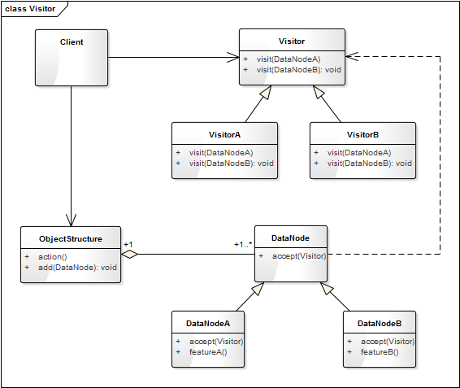

- 00 生活中的设计模式：启程之前，请不要错过我.md.html
- 01 监听模式：坑爹的热水器.md.html
- 02 适配模式：身高不够鞋来凑.md.html
- 03 状态模式：人与水的三态.md.html
- 04 单例模式：你是我生命的唯一.md.html
- 05 职责模式：我的假条去哪了.md.html
- 06 中介模式：找房子问中介.md.html
- 07 代理模式：帮我拿一下快递.md.html
- 08 装饰模式：你想怎么穿就怎么穿.md.html
- 09 工厂模式：你要拿铁还是摩卡.md.html
- 10 迭代模式：下一个就是你了.md.html
- 11 组合模式：自己组装电脑.md.html
- 12 构建模式：想要车还是庄园.md.html
- 13 克隆模式：给你一个分身术.md.html
- 14 策略模式：怎么来不重要，人到就行.md.html
- 15 命令模式：大闸蟹，走起！.md.html
- 16 备忘模式：好记性不如烂笔头.md.html
- 17 享元模式：颜料很贵必须充分利用.md.html
- 18 外观模式：学妹别慌，学长帮你.md.html
- 19 访问模式：一千个读者一千个哈姆雷特.md.html
- 20 生活中的设计模式：与经典设计模式的不解渊源.md.html
- 21 生活中的设计模式：那些未完待续的设计模式.md.html
- 22 深入解读过滤器模式：制作一杯鲜纯细腻的豆浆.md.html
- 23 深入解读对象池技术：共享让生活更便捷.md.html
- 24 深入解读回调机制：把你技能亮出来.md.html
- 25 谈谈我对设计模式的理解.md.html
- 26 谈谈我对设计原则的思考.md.html
- 27 谈谈我对项目重构的看法.md.html
- 捐赠
19 访问模式：一千个读者一千个哈姆雷特
【故事剧情】
光阴似箭，转眼间作为 IT 狗的 Tony 已在职场上混迹快五年了，都说五年一个瓶颈，Tony 能否跳出这个瓶颈，他心里也没底，但他总觉得该留下点什么了。Tony 喜欢写博客，经常把自己对行业的看法及对应用到的技术的总结写成文章分享出来，这一习惯从大二开始一直坚持了下来，目前已经写了不少原创文章了。
喜欢写作的人都有一个共同的梦想，就是希望有一天能写出一本书。Tony 也一样，出一本畅销书是隐藏在他内心的一个梦想，时刻有一种声音在呼唤着他！这也是他能一直坚持写作的动力，正好在这五年的一个拐点，他该行动了！
Tony 真的动笔了，写起了他酝酿已久的一个主题《从生活的角度解读设计模式》，文章一经发表，便收到了很多读者的好评，同是技术圈的朋友评价：能抓住模式的核心思想、深入浅出，很有见地！做产品和设计的朋友评价：配图非常有趣，文章很有层次感！那些 IT 圈外的朋友则评价：技术的内容一脸懵圈，但故事很精彩，像是看小说或是故事集！真是一千个读者一千个哈姆雷特啊。

用程序来模拟生活
Tony 的书是以完全一样的内容呈现给他们，但他的那些朋友却因为专业和工作性质的不同，看到了不同的内容和角度。我们用程序来模拟一下这个场景。
源码示例：
from abc import ABCMeta, abstractmethod
# 引入ABCMeta和abstractmethod来定义抽象类和抽象方法
class DesignPatternBook:
"《从生活的角度解读设计模式》一书"
def getName(self):
return "《从生活的角度解读设计模式》"
class Reader(metaclass=ABCMeta):
"访问者，也就是读者"
@abstractmethod
def read(self, book):
pass
class Engineer(Reader):
def read(self, book):
print("技术狗读" + book.getName() + "一书后的感受：能抓住模式的核心思想，深入浅出，很有见地！")
class ProductManager(Reader):
"产品经理"
def read(self, book):
print("产品经理读" + book.getName() + "一书后的感受：配图非常有趣，文章很有层次感！")
class OtherFriend(Reader):
"IT圈外的朋友"
def read(self, book):
print("IT圈外的朋友读" + book.getName() + "一书后的感受：技术的内容一脸蒙蔽，但故事很精彩，像是看小说或是故事集！")
测试代码：
def testBook():
book = DesignPatternBook()
fans = [Engineer(), ProductManager(), OtherFriend()];
for fan in fans:
fan.read(book)
输出结果：
技术狗读《从生活的角度解读设计模式》一书后的感受：能抓住模式的核心思想，深入浅出，很有见地！
产品经理读《从生活的角度解读设计模式》一书后的感受：配图非常有趣，文章很有层次感！
IT 圈外的朋友读《从生活的角度解读设计模式》一书后的感受：技术的内容一脸蒙蔽，但故事很精彩，像是看小说或是故事集！
从剧情中思考访问模式
在上面的示例中，同样内容的一本书，不同类型的读者看到了不同的内容，读到了不同的味道。这里读者和书是两类事物，他们虽有联系，却是比较弱的联系，因此我我们将其分开处理，这种方式在程序中叫访问者模式，也可简称为访问模式。这里的读者就是访问者，书就是被访问的对象，阅读是访问的行为。
访问模式
Represent an operation to be performed on the elements of an object structure. Visitor lets you define a new operation without changing the classes of the elements on which it operates.
封装一些作用于某种数据结构中各元素的操作，它可以在不改变数据结构的前提下定义作用于这些元素的新的操作。
访问模式的核心思想在于：可以在不改变数据结构的前提下定义作用于这些元素的新操作。将数据结构和操作（或算法）进行解耦，而且能更方便地拓展新的操作。
访问模式的模型抽象
代码框架
上面的示例代码还是相对比较粗糙，我们可以对它进行进一步的重构和优化，抽象出访问模式的框架模型。
from abc import ABCMeta, abstractmethod
# 引入ABCMeta和abstractmethod来定义抽象类和抽象方法
class DataNode(metaclass=ABCMeta):
"数据结构类"
def accept(self, visitor):
"接受访问者的访问"
visitor.visit(self)
class Visitor(metaclass=ABCMeta):
"访问者"
@abstractmethod
def visit(self, data):
"对数据对象的访问操作"
pass
class ObjectStructure:
"数据结构的管理类，也是数据对象的一个容器，可遍历容器内的所有元素"
def __init__(self):
self.__datas = []
def add(self, dataElement):
self.__datas.append(dataElement)
def action(self, visitor):
"进行数据访问的操作"
for data in self.__datas:
visitor.visit(data)
这里 Visitor 的访问方法只有一个 visit()，是因为 Python 不支持方法的重载。在一些强类型的语言（如 Java、C++）中，应该有多个方法，针对每一个 DataNode 子类定义一个重载方法。
类图
上面的代码框架是访问模式的关键类的实现，访问模式的类图表示如下：

DataNode 是数据结点，可接受（accept）访问者的访问，如上面示例中的 DesignPatternBook；DataNodeA 和 DataNodeB 是它的具体实现类。Visitor 是访问者类，可访问（visit）具体的对象，如上面示例中的 Reader。ObjectStructure 是数据结构的管理类，也是数据对象的一个容器，可遍历容器内的所有元素。
基于框架的实现
有了上面的代码框架之后，我们要实现示例代码的功能就会更简单了。最开始的示例代码假设它为 version 1.0，那么再看看基于框架的 version 2.0 吧。
class DesignPatternBook:
"《从生活的角度解读设计模式》一书"
def getName(self):
return "《从生活的角度解读设计模式》"
class Engineer(Visitor):
def visit(self, book):
print("技术狗读" + book.getName() + "一书后的感受：能抓住模式的核心思想，深入浅出，很有见地！")
class ProductManager(Visitor):
"产品经理"
def visit(self, book):
print("产品经理读" + book.getName() + "一书后的感受：配图非常有趣，文章很有层次感！")
class OtherFriend(Visitor):
"IT圈外的朋友"
def visit(self, book):
print("IT圈外的朋友读" + book.getName() + "一书后的感受：技术的内容一脸蒙蔽，但故事很精彩，像是看小说或是故事集！")
测试代码也得相应改动一下：
def testVisitBook():
book = DesignPatternBook()
objMgr = ObjectStructure()
objMgr.add(book)
objMgr.action(Engineer())
objMgr.action(ProductManager())
objMgr.action(OtherFriend())
自己跑一下，会发现输出结果和之前的是一样的。
模型说明
设计要点
- 访问者（Visitor）： 负责对数据结点进行访问和操作。
- 数据结点（DataNode）： 即要被操作的数据对象。
- 对象结构（ObjectStructure）： 数据结构的管理类，也是数据对象的一个容器，可遍历容器内的所有元素。
优缺点
访问模式的优点
- 将数据和操作（算法）分离、降低了耦合度。将有关元素对象的访问行为集中到一个访问者对象中，而不是分散在一个个的元素类中，类的职责更加清晰。
- 增加新的访问操作很方便。使用访问者模式，增加新的访问操作就意味着增加一个新的具体访问者类，实现简单，无须修改源代码，符合“开闭原则”。
- 让用户能够在不修改现有元素类层次结构的情况下，定义作用于该层次结构的操作。
访问模式的缺点
- 增加新的元素类很困难。在访问者模式中，每增加一个新的元素类都意味着要在抽象访问者角色中增加一个新的抽象操作，并在每一个具体访问者类中增加相应的具体操作，这违背了“开闭原则”的要求。
- 破坏数据对象的封装性。访问者模式要求访问者对象访问并调用每一个元素对象的操作，这意味着元素对象有时候必须暴露一些自己的内部操作和内部状态，否则无法供访问者访问。
实战应用
在宠物界中，猫和狗历来就是一对欢喜冤家！假如宠物店中有 N 只猫和 M 只狗，我们要进行下面这3个操作：
- 在这些宠物中雌猫、雄猫、雌狗、雄狗的数量分别是多少。
- 猫的平均体重和狗的平均体重分别是多少。
- 年龄最大的猫和狗。
这个时候，如果要在猫和狗的对象上添加这些操作，将会增加非常多的方法而污染原有的对象；而且这些操作的拓展性也将非常差，这时访问模式是解决这个问题的最好方法，具体的实现如下。
源码示例：
class Animal(DataNode):
"动物类"
def __init__(self, name, isMale, age, weight):
self.__name = name
self.__isMale = isMale
self.__age = age
self.__weight = weight
def getName(self):
return self.__name
def isMale(self):
return self.__isMale
def getAge(self):
return self.__age
def getWeight(self):
return self.__weight
class Cat(Animal):
"猫"
def __init__(self, name, isMale, age, weight):
super().__init__(name, isMale, age, weight)
def speak(self):
print("miao~")
class Dog(Animal):
"狗"
def __init__(self, name, isMale, age, weight):
super().__init__( name, isMale, age, weight)
def speak(self):
print("wang~")
class GenderCounter(Visitor):
"性别统计"
def __init__(self):
self.__maleCat = 0
self.__femaleCat = 0
self.__maleDog = 0
self.__femalDog = 0
def visit(self, data):
if isinstance(data, Cat):
if data.isMale():
self.__maleCat += 1
else:
self.__femaleCat += 1
elif isinstance(data, Dog):
if data.isMale():
self.__maleDog += 1
else:
self.__femalDog += 1
else:
print("Not support this type")
def getInfo(self):
print(str(self.__maleCat) + "只雄猫，" + str(self.__femaleCat) + "只雌猫，"
+ str(self.__maleDog) + "只雄狗，" + str(self.__femalDog) + "只雌狗。")
class WeightCounter(Visitor):
def __init__(self):
self.__catNum = 0
self.__catWeight = 0
self.__dogNum = 0
self.__dogWeight = 0
def visit(self, data):
if isinstance(data, Cat):
self.__catNum +=1
self.__catWeight += data.getWeight()
elif isinstance(data, Dog):
self.__dogNum += 1
self.__dogWeight += data.getWeight()
else:
print("Not support this type")
def getInfo(self):
print("猫的平均体重是：%0.2fkg， 狗的平均体重是：%0.2fkg" %
((self.__catWeight / self.__catNum),(self.__dogWeight / self.__dogNum)))
class AgeCounter(Visitor):
def __init__(self):
self.__catMaxAge = 0
self.__dogMaxAge = 0
def visit(self, data):
if isinstance(data, Cat):
if self.__catMaxAge < data.getAge():
self.__catMaxAge = data.getAge()
elif isinstance(data, Dog):
if self.__dogMaxAge < data.getAge():
self.__dogMaxAge = data.getAge()
else:
print("Not support this type")
def getInfo(self):
print("猫的最大年龄是：" + str(self.__catMaxAge) + "， 狗的最大年龄是：" + str(self.__dogMaxAge))
测试代码：
def testAnimal():
animals = ObjectStructure()
animals.add(Cat("Cat1", True, 1, 5))
animals.add(Cat("Cat2", False, 0.5, 3))
animals.add(Cat("Cat3", False, 1.2, 4.2))
animals.add(Dog("Dog1", True, 0.5, 8))
animals.add(Dog("Dog2", True, 3, 52))
animals.add(Dog("Dog3", False, 1, 21))
animals.add(Dog("Dog4", False, 2, 25))
genderCounter = GenderCounter()
animals.action(genderCounter)
genderCounter.getInfo()
print()
weightCounter = WeightCounter()
animals.action(weightCounter)
weightCounter.getInfo()
print()
ageCounter = AgeCounter()
animals.action(ageCounter)
ageCounter.getInfo()
输出结果：
1只雄猫，2只雌猫，2只雄狗，2只雌狗。
猫的平均体重是：4.07kg， 狗的平均体重是：26.50kg
猫的最大年龄是：1.2， 狗的最大年龄是：3
使用访问模式后，代码结构是不是清爽了很多！
应用场景
- 对象结构中包含的对象类比较少，而且这些类需要比较固定，很少改变，但经常需要在此对象结构上定义新的操作。
- 一个对象结构包含多个类型的对象，希望对这些对象实施一些依赖其具体类型的操作。在访问者中针对每一种具体的类型都提供了一个访问操作，不同类型的对象可以有不同的访问操作。
- 需要对一个对象结构中的对象进行很多不同的并且不相关的操作，而需要避免让这些操作“污染”这些对象的类，也不希望在增加新操作时修改这些类。访问者模式使得我们可以将相关的访问操作集中起来定义在访问者类中，对象结构可以被多个不同的访问者类所使用，将对象本身与对象的访问操作分离。
© 2019 - 2023 Liangliang Lee. Powered by gin and hexo-theme-book.